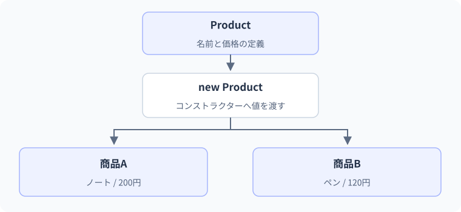

クラスとコンストラクター
一つのクラスから二つの個体を作る。
名前と処理を持つ学習者を一人作り、続いて二人目を作ります。一つのクラスを使っていても、それぞれが自分の状態を持つことを出発点にします。
要点
var user = new User("Zaki");
Console.WriteLine(user.Name);クラスから個別の実体を作る
クラスを理解する中心は、classという構文ではなく「何を一つの状態として守るか」です。学習記録なら名前と時間、口座なら残高という状態があります。作成時に無効な状態を入れないこと、個別のインスタンスと共有データを分けることから設計します。
インスタンスごとに状態を持つ
classは関連するデータと処理をまとめる型です。newで生成したオブジェクトは、それぞれ別の状態を持ちます。staticメンバーは特定のインスタンスに属さないため、全ユーザーの状態をstaticに置くと共有されてしまいます。「誰の状態か」を意識して設計しましょう。
型・変数・インスタンスを混同しない
class Learnerは型の定義です。new Learner("A")はその型のインスタンスを生成し、Learner learnerはそのインスタンスへの参照を入れる変数です。設計図・実体・実体を指す変数の三つを別々に考えると、同じクラスから作った二人の名前が別々に保存されることを説明できます。
newを二回呼べば通常は別々のクラスインスタンスになりますが、var second = first;はnewではないので実体を増やしません。二つの変数が同じ実体を参照します。C#のクラスは参照型です。値型とのコピーの違いはLesson 13で深めますが、ここから変数名が二つあることと実体が二つあることを区別してください。
var learner = new Learner("ざき");という一行には、三つの異なる役割が現れます。
クラスという型持つ状態と使える操作を定義
生成する処理初期値を渡して個別の実体を作る
参照を保持する変数作った実体を後から利用する
同じLearner型を使ってもう一度newすると、別の実体を作れます。変数名が型名になったり、クラス定義が人ごとに増えたりするわけではありません。
Learnerを生成して自己紹介を呼ぶ
var learner = new Learner("ざき");
Console.WriteLine(learner.Introduce());
public class Learner
{
public string Name { get; }
public Learner(string name)
{
if (string.IsNullOrWhiteSpace(name))
throw new ArgumentException("名前は必須です", nameof(name));
Name = name.Trim();
}
public string Introduce() => $"{Name}です。C#を学習中です。";
}この例のコンストラクターは、渡された名前を確認してからNameへ保存します。
- 1引数を渡す
name = "ざき" - 2名前を検証
空白だけではない - 3Nameへ保存
Trimした名前を保持 - 4Introduce()
保持したNameを使って文字列を返す
空白だけの名前では正常な生成を終えず、例外を伝えます。Introduceが呼ばれるのは、有効な名前で生成が完了した後です。
想定出力
処理順
- new Learnerでコンストラクターへ名前を渡す。
- 入力を検証してNameへ設定する。
- インスタンスのIntroduceが、その人の名前を使った文字列を返す。
独立した二つの学習記録を更新する
var first = new StudyCounter("A");
var second = new StudyCounter("B");
first.Add(30);
second.Add(10);
first.Add(20);
Console.WriteLine($"{first.Name}: {first.Minutes}");
Console.WriteLine($"{second.Name}: {second.Minutes}");
public class StudyCounter
{
public string Name { get; }
public int Minutes { get; private set; }
public StudyCounter(string name)
{
if (string.IsNullOrWhiteSpace(name)) throw new ArgumentException("名前は必須", nameof(name));
Name = name.Trim();
}
public void Add(int minutes)
{
if (minutes < 0) throw new ArgumentOutOfRangeException(nameof(minutes));
Minutes = checked(Minutes + minutes);
}
}出力
| 段階 | 値・状態 | 読み解き |
|---|---|---|
| newを二回 | A用とB用の別インスタンス | Minutesは各インスタンスで0から始まる |
| first.Add(30) | A=30、B=0 | firstの参照先だけ更新 |
| second.Add(10) | A=30、B=10 | 独立した状態を更新 |
| first.Add(20) | A=50、B=10 | Aの前の値へ加算 |
| 表示 | 50と10 | 同じ型でもインスタンスの値は別 |
生成時に有効な状態を作る
生成時の条件を固定する
コンストラクターは型名と同じ名前で、戻り値を書きません。必要な値を引数で受け取り、未入力などの不正な状態を最初に拒否すると、後続のコードで毎回同じ検証を繰り返さずに済みます。引数を省略できるコンストラクターを自分で用意していない場合、引数必須の型をnew Type()とは生成できません。
コンストラクターで成立条件を守る
コンストラクターは型と同じ名前で、戻り値の型を書きません。生成時に必要なデータを引数にし、状態を初期化します。タイトルが必須、時間が0以上なら、この条件を満たさない値を拒否してから代入します。外で検証したはずと考えて型の中を無防備にすると、別の利用箇所から無効な状態が作られます。
生成の途中で例外が発生した場合、呼び出し側は正常な生成結果を受け取りません。外へ公開できる完全な状態を作るのが目的なので、生成途中のthisをイベントやグローバルな場所へ渡すのは避けます。入力を整形するなら、Trim前後のどちらを検証するかも決めます。空白だけを空タイトルとして扱う場合はIsNullOrWhiteSpaceが適しています。
thisとコンストラクターチェーン
thisは現在のインスタンスを指します。フィールド名と引数名を同じnameにした場合、this.name = name;で左がフィールド、右が引数だと区別できます。どちらもnameと書くと引数へ自分自身を代入してしまう誤りが起こり得ます。チームでフィールドを_nameにする規約を使うこともあります。
複数のコンストラクターで同じ検証と初期化を繰り返す場合は、: this(...)で一つのコンストラクターへ委譲できます。初期化経路をまとめると、後で条件を変えたときに一つだけ修正できます。C#にはプライマリコンストラクターもありますが、通常のclassで引数を書くだけで自動プロパティが生えるわけではなく、recordの位置指定構文と区別します。
同じクラスから実体Aと実体Bを作った場合を考えます。メソッドをAに対して呼ぶかBに対して呼ぶかで、thisの対象が変わります。
Name = "Aさん"Name = "Bさん"矢印は参照関係を表します。物理的なメモリ位置やアドレスの図ではありません。
this.Name = name;の左辺はその実体のプロパティ、右辺は受け取った引数です。名前が似ていても、保存先と入力値は別です。
実例：商品の名前と価格をまとめる
商品ごとに関連する値をProductへまとめ、一覧を表示します。
var notebook = new Product("ノート", 200);
var pen = new Product("ペン", 120);
Console.WriteLine($"{notebook.Name}: {notebook.Price}円");
Console.WriteLine($"{pen.Name}: {pen.Price}円");
class Product
{
public string Name { get; }
public int Price { get; }
public Product(string name, int price)
{
Name = name;
Price = price;
}
}このコードの図解：一つのクラスから二つの個体を作る

想定出力
ノート: 200円
ペン: 120円処理と値の変化
- new Product生成時にコンストラクターが呼ばれる
- NameとPriceそのインスタンスの初期状態として保存する
- notebookとpen二つの異なるオブジェクトを参照する
同名・同価格のProductをもう一つnewしても、同じオブジェクトになるわけではありません。
よくある間違いと修正
コンストラクターでフィールドを初期化できていない
修正箇所: コンストラクターの同名引数とフィールド
修正前
public class Label
{
private string name = "";
public Label(string name) { name = name; }
}修正後
var label = new Label("C#");
Console.WriteLine(label.Name);
public class Label
{
private readonly string name;
public string Name => name;
public Label(string name) { this.name = name; }
}修正後の確認
- C#を渡すとC#を表示する
- 別の名前を渡すと、その名前を表示する
- コンストラクター内でフィールドへ代入していると説明できる
外部へ公開する範囲と共有する状態
公開範囲は小さくする
外から必要な操作だけをpublicにし、内部の補助処理や書き換えをprivateにします。ファイル直下の型はアクセス修飾子省略時にinternal、classのメンバーは省略時にprivateです。ここでは読み取り専用プロパティNameを使い、次のレッスンで詳しく扱います。
staticは便利な共有箱ではない
インスタンスメンバーは個別のオブジェクトに属し、staticメンバーは型に属します。個々の学習者の学習時間をstaticにすると、全員が同じ値を共有してしまいます。どの状態が一人分なのか、全体で共有したい値なのかを先に決めます。staticを使うとnewが不要になるからという理由だけで選ばないようにします。
状態を持たない計算などにはstaticメソッドが自然な場合があります。逆に現在時刻、外部API、DB接続などをstaticへ固定すると、テストで差し替えにくくなることがあります。すべてをインターフェイス化する必要はありませんが、変化する依存関係を型の外から渡す設計はLesson 12で扱います。
C#仕様の整理
| 観点 | C#での扱い | 読み方・設計上の要点 |
|---|---|---|
| 生成 | 同様にnewとコンストラクター | 引数を検証してから有効な状態を公開する |
| this | 同様に現在のインスタンス | 引数とフィールドの取り違えを避ける |
| 初期化の委譲 | コンストラクター宣言の: this(...) | 重複した検証処理を一か所へまとめる |
| アクセス | internalはアセンブリ単位 | namespaceをpackageアクセスと同一視しない |
基礎・標準・応用演習
C#実行環境：.NET 10 SDK
基礎演習
タイトルと学習時間Minutesを持つStudySessionを作り、負の時間はArgumentOutOfRangeExceptionで拒否してください。正常値30分を表示します。
開始コード
// StudySessionを定義し、30分の学習記録を作成する。入力例・前提条件
タイトルとMinutes=30。負の時間は生成時に拒否する。
考え方のヒント
コンストラクターの最初にminutes<0を判定し、その後で状態へ代入する。
解答例と確認ポイント
var session = new StudySession("C#", 30);
Console.WriteLine($"{session.Title}: {session.Minutes}分");
public class StudySession
{
public string Title { get; }
public int Minutes { get; }
public StudySession(string title, int minutes)
{
if (string.IsNullOrWhiteSpace(title))
throw new ArgumentException("タイトルは必須です", nameof(title));
if (minutes < 0)
throw new ArgumentOutOfRangeException(nameof(minutes));
Title = title;
Minutes = minutes;
}
}| 解答で確認する条件 | 確認方法 |
|---|---|
| C#: 30分と表示される。 | コードと想定結果を照合 |
| -1分は生成時に拒否される。 | コードと想定結果を照合 |
処理と結果の読み解き
インスタンスを使い始める時点で時間が0以上と保証する。30なら初期化を終えて表示でき、負数なら生成を正常に完了しない。
よくある別解と選び方
検証用のメソッドへ条件をまとめることもできるが、必要以上に分割せず入口の保証が分かる形にする。
よくある間違いと確認箇所
生成してから外部で後付け検証すると、不正な実体が他へ渡る期間を作り得る。引数名とフィールド名の取り違えも調べる。
実務例：業務モデルは作成時の前提を明確にして、後の操作が信頼できる状態を用意する。
標準：既定の学習時間を持つ記録
Session(string title,int minutes)とSession(string title)を作り、後者から前者へ30分を渡して委譲します。タイトルC#だけで作るとC#:30と表示してください。
- 一引数版に: this(title,30)を書く
- 検証と代入は二引数版へ集約する
- タイトルと分数はgetのみのプロパティにする
開始コード
// 標準：既定の学習時間を持つ記録
// 課題とテストケースを読んで、自分で実装してください。
入力例・前提条件
SessionへタイトルC#だけを渡し、時間は30とする。
考え方のヒント
短いコンストラクターからthis(title,30)で共通の初期化へ委譲する。
解答例と確認ポイント
var session = new Session("C#");
Console.WriteLine($"{session.Title}:{session.Minutes}");
public class Session
{
public string Title { get; }
public int Minutes { get; }
public Session(string title) : this(title, 30) { }
public Session(string title, int minutes)
{
if (string.IsNullOrWhiteSpace(title)) throw new ArgumentException("タイトルは必須", nameof(title));
if (minutes < 0) throw new ArgumentOutOfRangeException(nameof(minutes));
Title = title.Trim();
Minutes = minutes;
}
}想定出力
- 既定値を持つ入口でも、同じ検証済みの生成経路を使う。
- 二つのコンストラクターへ同じ検証をコピーしないため変更漏れを減らせる。
- 明示的に0分を渡した場合は既定値30へ変えず、指定値0を尊重する。
| 入力 / 条件 | 期待結果 |
|---|---|
| Session("C#") | C#:30 |
| Session("C#",0) | C#:0 |
| Session(" ") | ArgumentException |
処理と結果の読み解き
一引数の入口が30を補って二引数の入口へ渡すので、検証と代入を二か所へ複製しない。最終状態はC#と30。
よくある別解と選び方
引数minutes=30の省略可能な一つのコンストラクターでも表現できる。今回はコンストラクター委譲の流れを追う。
よくある間違いと確認箇所
同じ検証を両方へ写すと、片方だけ修正して差が出る。thisによる委譲と、別のnewで無関係な実体を作ることを混同しない。
実務例：作り方が複数あっても、正しい初期状態へ導く共通経路を保つ。
応用：範囲を守るチケット枚数
TicketStockを初期枚数2で作り、TryUseで残りがあれば1減らしてtrue、0ならfalseを返します。3回呼び出しTrue,True,False、残り0を確認します。
- 在庫はget/private setにする
- 更新前に0か確認する
- 負数の初期値は生成時に拒否する
開始コード
// 応用：範囲を守るチケット枚数
// 課題とテストケースを読んで、自分で実装してください。
入力例・前提条件
初期枚数2。TryUseを三回呼ぶ。
考え方のヒント
残り0を先に拒否し、使える場合だけ1減らす。
解答例と確認ポイント
var stock = new TicketStock(2);
Console.WriteLine(stock.TryUse());
Console.WriteLine(stock.TryUse());
Console.WriteLine(stock.TryUse());
Console.WriteLine(stock.Remaining);
public class TicketStock
{
public int Remaining { get; private set; }
public TicketStock(int initial)
{
if (initial < 0) throw new ArgumentOutOfRangeException(nameof(initial));
Remaining = initial;
}
public bool TryUse()
{
if (Remaining == 0) return false;
Remaining--;
return true;
}
}想定出力
- 生成時と更新時の両方で負数にならない条件を守る。
- 在庫切れは通常起こる結果なのでTryUseのfalseとして返す。
- この例は単一スレッドの学習用である。同時実行で共有する場合は確認と減算を一体で同期する必要がある。
| 入力 / 条件 | 期待結果 |
|---|---|
| 初期0 | 最初からfalse・残り0 |
| 初期1 | trueの後false |
| 初期-1 | 生成時に例外 |
処理と結果の読み解き
一回目2→1でtrue、二回目1→0でtrue、三回目0→0でfalse。失敗した要求で状態を変えないことも解答条件。
よくある別解と選び方
使う枚数を引数へ一般化するのは発展。この課題では一回1枚の契約を明確にする。
よくある間違いと確認箇所
先に減らして負数ならfalseにすると、三回目で-1を残す。成功の戻り値と実際の状態変化を一致させる。
実務例：在庫・予約枠・残高の更新でも、成功時だけ変更する設計が基本になる。
確認問題
理解チェックと公式資料
- 型・参照変数・実体を別々に説明できる
- コンストラクターで不変条件を守れる
- 初期化経路の重複を委譲で減らせる
- 個別状態を誤ってstaticにしない
公式一次情報
公式資料
確認日：2026年9月14日。本文の理解を補うための資料です。学習対象は.NET 10 / C# 14です。パッチ番号は固定しません。